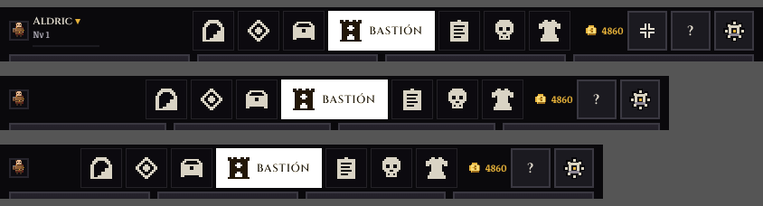
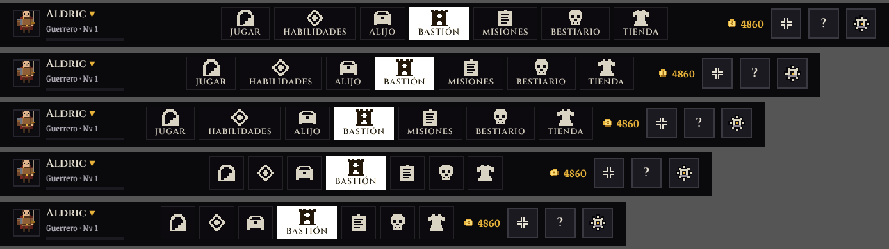

Maqueta sobre el juego real (estilos inyectados solo para las capturas; el código no se ha tocado). Tres columnas: antes (mockups/plan-interfaz/actual), la maqueta aprobada y el juego real ya implementado (node mockups/fase1-base/capturar-real.cjs http://localhost:5173/play/). Toca una imagen para verla en grande. Se rehace con node mockups/fase1-base/capturar.cjs http://localhost:5173/play/.
- Paleta piedra fría en todo el juego: fondo #0a090c, paneles #151419, bordes #3a3841, texto #e6e0d2.
- Texto secundario legible: el gris que se usa 156 veces pasa de 2,9 a 7,5 de contraste; el desactivado, de 3,2 a 4,7 (color fijo en lugar de transparencia).
- Paneles y botones planos: sin degradados ni sombras (de unos 310 elementos con degradado por formato a unos 105; los que quedan son barras, retratos del Bastión y escena de combate, que se tratan en sus fases).
- Dorado relleno solo en el botón principal y en la pestaña activa. Botón de peligro en rojo de contorno.
- Pestañas con icono (12×12, un color, como Apoyar y Discord). En el móvil, nombre solo en la activa: ya no se corta «Jugar» ni «Tienda».
- No cambia nada más: textos, posiciones, botones y tutoriales siguen igual. La tienda nueva es la fase 2.
Barra de pestañas en distintos anchos (juego real)
Móvil 844, 740 y 667 px: centrada; en los estrechos, retrato sin nombre y sin el botón de pantalla completa en la barra (sigue en Ajustes › Pantalla y con F). Tableta 1279, 1180, 1100, 1024 y 900 px: icono encima del nombre; por debajo de 1100 px, nombre solo en la activa. Iconos siempre a 24 px (×2).

